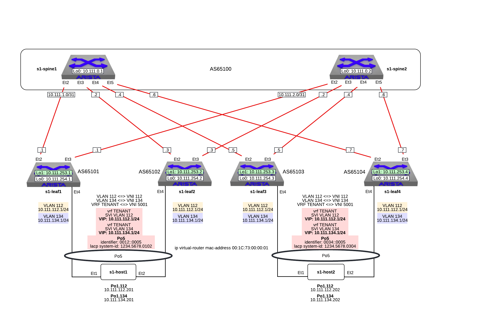

L2 and L3 EVPN - Symmetric IRB with All-Active Multihoming

Note
This lab exercise is focused on the VXLAN EVPN configuration. IP addresses and BGP Underlay are already configured.
-
Log into the LabAccess jumpserver:
-
Type
97to access additional lab, thenevpn-labsat the prompt to access the EVPN VXLAN content. Then typel2l3evpn-aafor the Layer 2 and 3 EVPN lab. The script will configure the datacenter with the exception of s1-leaf4.Note
Did you know the "l2l3evpn-aa" script is composed of Python code that uses the CloudVision Portal REST API to automate the provisioning ofCVP Configlets. The configlets that are configured via the REST API are
L2L3EVPN-AA_s1-spine1,L2L3EVPN-AA_s1-spine2,L2L3EVPN-AA_s1-leaf1,L2L3EVPN-AA_s1-leaf2,L2L3EVPN-AA_s1-leaf3,L2L3EVPN-AA_s1-leaf4.
-
-
On s1-leaf4, check if Multi-Agent Routing Protocols are enabled.
s1-leaf4#show run section service service routing protocols model multi-agent s1-leaf4#show ip route summary Operating routing protocol model: multi-agent Configured routing protocol model: multi-agent VRF: default Route Source Number Of Routes ------------------------------------- ------------------------- connected 4 static (persistent) 0 static (non-persistent) 0 VXLAN Control Service 0 static nexthop-group 0 ospf 0 Intra-area: 0 Inter-area: 0 External-1: 0 External-2: 0 NSSA External-1: 0 NSSA External-2: 0 ospfv3 0 bgp 9 External: 7 Internal: 2 isis 0 Level-1: 0 Level-2: 0 rip 0 internal 11 attached 3 aggregate 0 dynamic policy 0 gribi 0 Total Routes 27 Number of routes per mask-length: /8: 2 /24: 3 /30: 1 /31: 2 /32: 19Note
By default, EOS is using the GateD routing process. Activating (ArBGP) is requiring a reboot. This has been done prior to the lab buildout so no reboot is required here.
-
On s1-leaf4, check the following operational states before configuring EVPN constructs:
-
Verify BGP operational details for Underlay:
Note
You should see underlay sessions; one to each spine. In this design, there is no \"peer-link\"
s1-leaf4#show ip bgp summary BGP summary information for VRF default Router identifier 10.111.254.4, local AS number 65102 Neighbor Status Codes: m - Under maintenance Neighbor V AS MsgRcvd MsgSent InQ OutQ Up/Down State PfxRcd PfxAcc 10.111.1.6 4 65100 9 12 0 0 00:00:07 Estab 8 8 10.111.2.6 4 65100 9 12 0 0 00:00:07 Estab 8 8 -
Check the IP routing table:
Note
Notice that s1-leaf4 has 2 ECMP paths for reaching s1-leaf1, s1-leaf2 and s1-leaf3 loopacks.
s1-leaf4#show ip route VRF: default Codes: C - connected, S - static, K - kernel, O - OSPF, IA - OSPF inter area, E1 - OSPF external type 1, E2 - OSPF external type 2, N1 - OSPF NSSA external type 1, N2 - OSPF NSSA external type2, B - Other BGP Routes, B I - iBGP, B E - eBGP, R - RIP, I L1 - IS-IS level 1, I L2 - IS-IS level 2, O3 - OSPFv3, A B - BGP Aggregate, A O - OSPF Summary, NG - Nexthop Group Static Route, V - VXLAN Control Service, M - Martian, DH - DHCP client installed default route, DP - Dynamic Policy Route, L - VRF Leaked, G - gRIBI, RC - Route Cache Route Gateway of last resort is not set B E 10.111.0.1/32 [200/0] via 10.111.1.6, Ethernet2 B E 10.111.0.2/32 [200/0] via 10.111.2.6, Ethernet3 C 10.111.1.6/31 is directly connected, Ethernet2 B E 10.111.1.0/24 [200/0] via 10.111.1.6, Ethernet2 C 10.111.2.6/31 is directly connected, Ethernet3 B E 10.111.2.0/24 [200/0] via 10.111.2.6, Ethernet3 B I 10.111.112.0/24 [200/0] via 10.255.255.1, Vlan4094 B E 10.111.253.1/32 [200/0] via 10.111.1.6, Ethernet2 via 10.111.2.6, Ethernet3 B E 10.111.253.2/32 [200/0] via 10.111.1.6, Ethernet2 via 10.111.2.6, Ethernet3 B E 10.111.253.3/32 [200/0] via 10.111.1.6, Ethernet2 via 10.111.2.6, Ethernet3 B E 10.111.254.1/32 [200/0] via 10.111.1.6, Ethernet2 via 10.111.2.6, Ethernet3 B E 10.111.254.2/32 [200/0] via 10.111.1.6, Ethernet2 via 10.111.2.6, Ethernet3 B E 10.111.254.3/32 [200/0] via 10.111.1.6, Ethernet2 via 10.111.2.6, Ethernet3 C 10.111.254.4/32 is directly connected, Loopback0 C 10.255.255.0/30 is directly connected, Vlan4094 C 192.168.0.0/24 is directly connected, Management0
-
-
On s1-leaf4, configure the BGP EVPN control-plane.
-
Configure the EVPN control plane.
Note
In this lab, the Spines serve as EVPN Route Servers. They receive the EVPN Routes from each leaf and, due to our eBGP setup, will naturally pass them along the other leaves. In an EVPN A-A setup with eBGP, each VTEP has its own unique ASN.
Also note that BGP standard and extended communities are explicitly enabled on the peering. EVPN makes use of extended BGP communities for route signaling and standard communities allow for various other functions such as BGP maintenance mode.
Lastly, note in this setup we use eBGP-multihop peerings with the Loopback0 interfaces of each switch. This follows Arista best-practice designs for separation of Underlay (peerings done using physical Ethernet interfaces) and Overlay (peerings done using Loopbacks) when leveraging eBGP. Other options exist and can be discussed with your Arista SE.
router bgp 65104 neighbor SPINE-EVPN peer group neighbor SPINE-EVPN remote-as 65100 neighbor SPINE-EVPN update-source Loopback0 neighbor SPINE-EVPN ebgp-multihop 3 neighbor SPINE-EVPN send-community standard extended neighbor 10.111.0.1 peer group SPINE-EVPN neighbor 10.111.0.2 peer group SPINE-EVPN ! address-family evpn neighbor SPINE-EVPN activate -
Verify the EVPN Control-Plane is established to both Spine peers.
s1-leaf4(config-router-bgp-af)#show bgp evpn summary BGP summary information for VRF default Router identifier 10.111.254.4, local AS number 65104 Neighbor Status Codes: m - Under maintenance Neighbor V AS MsgRcvd MsgSent InQ OutQ Up/Down State PfxRcd PfxAcc 10.111.0.1 4 65100 31 31 0 0 00:00:04 Estab 34 34 10.111.0.2 4 65100 31 4 0 0 00:00:04 Estab 34 34
-
-
On s1-leaf4, configure the VXLAN data-plane for transport.
-
Configure Loopback1 with the shared IP of s1-leaf3.
Note
Unlike with MLAG VTEPs, with EVPN A-A, all VTEPs have a unique IP. We will see later how resiliency and load-balancing differ in this setup.
-
Configure the Vxlan1 interface with the Loopback1 as the source.
Note
This is the logical interface that will provide VXLAN header encap and decap functions.
-
-
Configure Layer 2 EVPN services on s1-leaf4.
-
Add the local Layer 2 VLANs with an IDs of 112 and 134.
-
Map the local Layer 2 VLANs with a matching VNIs.
Note
This is how the switch understands which local Layer 2 VLAN maps to which VNI in the overlay. The example shows matching them one to one, but any scheme or method is valid, such as adding 10000 to the VLAN ID.
-
Add the mac-vrf EVPN configuration for VLAN 112 and 134.
Note
Here we configure a VLAN-based service with EVPN. It has two components. The first is a route-distinguisher, or RD to identify the router (or leaf switch) that is originating the EVPN routes. This can be manually defined in the format of Number : Number, such as Loopback0 : VLAN ID or as we do in this case, let EOS automatically allocate one.
Second is the route-target, or RT. The RT is used by the leaf switches in the network to determine if they should import the advertised route into their local table(s). If they receive an EVPN route, they check the RT value and see if they have a matching RT configured in BGP. If they do, they import the route into the associated mac-vrf (or VLAN). If they do not, they ignore the route.
-
-
Configure Layer 3 EVPN services on s1-leaf4.
-
Create the VRF, or logical routing instance, for the Tenant Layer 3 Network.
Note
In EOS, by default, VRFs are created with inter-subnet routing disabled. Always be sure to enable IP routing in user-defined VRFs.
-
Create the SVI for default gateway function for the host network as an Anycast Gateway.
Note
With VXLAN, we can leverage a shared IP using Anycast Gateway. This allows a single IP to be shared without any other dedicated IPs per switch.
-
Map the local Layer 3 VRF with a matching VNI.
Note
For the Layer 3 Service, the VRF requires what is referred to as the Layer 3 VNI, which is used for VXLAN Routing in a Symmetric IRB deployment between VTEPs. Any unique ID number will serve here.
-
Add the IP VRF EVPN configuration for the TENANT VRF.
Note
Here we configure a Layer 3 VRF service with EVPN. It also leverage a unique RD and RT. They are used by the leaf switches for the same purpose as the Layer 2 service. The difference is simply the routes are imported. If they receive a Type 5 EVPN route, they check the RT value and see if they have a matching RT configured for the VRF. If so, they import the route into the associated VRF routing table. If they do not, they ignore the route.
-
Configure the host-facing EVPN A-A Port-Channel.
Note
This is where we configure the Ethernet Segment Identifier, or ESI, as well as a RT value for the Ethernet Segment. We will see how the EVPN control-plane leverages these to negotitate the charactertisics and state of the A-A Port-Channel. We also configure a static LACP System-ID. This is to ensure that all members of the Ethernet Segment appear as one LACP system to the downstream device. Note that all these values must match on members of the same Ethernet Segment (or Port-Channel).
interface Port-Channel5 description EVPN A-A Downlink - s1-host2 switchport trunk allowed vlan 112,134 switchport mode trunk ! evpn ethernet-segment identifier 0034:0000:0000:0000:0005 route-target import 00:03:04:00:00:05 lacp system-id 1234.5678.0304 ! interface Ethernet4 description EVPN A-A Downlink - s1-host2 channel-group 5 mode active
-
-
With the Layer 2 and 3 EVPN Services configured, verify the operational state.
-
Check the VXLAN data-plane configuration on s1-leaf4.
Note
Here we can see some useful commands for VXLAN verification.
show vxlan config-sanity detailverifies a number of standard things locally and with the MLAG peer to ensure all basic criteria are met.show interfaces Vxlan1provides a consolidated series of outputs of operational VXLAN data such as control-plane mode (EVPN in this case), VLAN to VNI mappings and discovered VTEPs.s1-leaf4#show vxlan config-sanity detail Category Result Detail ---------------------------------- -------- -------------------------------------------------- Local VTEP Configuration Check OK Loopback IP Address OK VLAN-VNI Map OK Routing OK VNI VRF ACL OK Decap VRF-VNI Map OK VRF-VNI Dynamic VLAN OK Remote VTEP Configuration Check OK Remote VTEP OK Platform Dependent Check OK VXLAN Bridging OK VXLAN Routing OK CVX Configuration Check OK CVX Server OK Not in controller client mode MLAG Configuration Check OK Run 'show mlag config-sanity' to verify MLAG config Peer VTEP IP OK MLAG peer is not connected MLAG VTEP IP OK Peer VLAN-VNI OK Virtual VTEP IP OK MLAG Inactive State OK s1-leaf4#show interfaces Vxlan1 Vxlan1 is up, line protocol is up (connected) Hardware is Vxlan Source interface is Loopback1 and is active with 10.111.253.4 Replication/Flood Mode is headend with Flood List Source: EVPN Remote MAC learning via EVPN VNI mapping to VLANs Static VLAN to VNI mapping is [112, 112] [134, 134] Dynamic VLAN to VNI mapping for 'evpn' is [4094, 5001] Note: All Dynamic VLANs used by VCS are internal VLANs. Use 'show vxlan vni' for details. Static VRF to VNI mapping is [TENANT, 5001] Headend replication flood vtep list is: 112 10.111.253.1 10.111.253.3 10.111.253.2 134 10.111.253.1 10.111.253.3 10.111.253.2 Shared Router MAC is 0000.0000.0000 -
Determine who the Designated Forwarder is for the EVPN A-A Port-Channel on s1-leaf4.
Note
In an EVPN A-A Ethernet Segment, only one member of the ES is elected as the Designated Forwarder, or DF. The DF is responsible for forwarding BUM traffic to the connected downstream device. By default, a modulus operation is run by all members of the ES to uniformly elect the DF based on the received Ethernet Segment, or EVPN Type 4, routes. Highlighted below we can see the received EVPN Type 4 routes from s1-leaf3 with the matching ESI value. The detailed output shows the associated ES RT value as well.
By further inspecting the EVPN Instances, or MAC-VRFs, we can determine which member of the ES has been elected as the DF.
s1-leaf4#show bgp evpn route-type ethernet-segment BGP routing table information for VRF default Router identifier 10.111.254.4, local AS number 65104 Route status codes: * - valid, - active, S - Stale, E - ECMP head, e - ECMP c - Contributing to ECMP, % - Pending BGP convergence Origin codes: i - IGP, e - EGP, ? - incomplete AS Path Attributes: Or-ID - Originator ID, C-LST - Cluster List, LL Nexthop - Link Local Nexthop Network Next Hop Metric LocPref Weight Path * Ec RD: 10.111.253.1:1 ethernet-segment 0012:0000:0000:0000:0005 10.111.253.1 10.111.253.1 - 100 0 65100 65101 i * ec RD: 10.111.253.1:1 ethernet-segment 0012:0000:0000:0000:0005 10.111.253.1 10.111.253.1 - 100 0 65100 65101 i * Ec RD: 10.111.253.2:1 ethernet-segment 0012:0000:0000:0000:0005 10.111.253.2 10.111.253.2 - 100 0 65100 65102 i * ec RD: 10.111.253.2:1 ethernet-segment 0012:0000:0000:0000:0005 10.111.253.2 10.111.253.2 - 100 0 65100 65102 i * Ec RD: 10.111.253.3:1 ethernet-segment 0034:0000:0000:0000:0005 10.111.253.3 10.111.253.3 - 100 0 65100 65103 i * ec RD: 10.111.253.3:1 ethernet-segment 0034:0000:0000:0000:0005 10.111.253.3 10.111.253.3 - 100 0 65100 65103 i * RD: 10.111.253.4:1 ethernet-segment 0034:0000:0000:0000:0005 10.111.253.4 - - - 0 i s1-leaf4#show bgp evpn route-type ethernet-segment esi 0034:0000:0000:0000:0005 detail BGP routing table information for VRF default Router identifier 10.111.254.4, local AS number 65104 BGP routing table entry for ethernet-segment 0034:0000:0000:0000:0005 10.111.253.3, Route Distinguisher: 10.111.253.3:1 Paths: 2 available 65100 65103 10.111.253.3 from 10.111.0.2 (10.111.0.2) Origin IGP, metric -, localpref 100, weight 0, valid, external, ECMP head, ECMP, best, ECMP contributor Extended Community: TunnelEncap:tunnelTypeVxlan EvpnEsImportRt:00:03:04:00:00:05 65100 65103 10.111.253.3 from 10.111.0.1 (10.111.0.1) Origin IGP, metric -, localpref 100, weight 0, valid, external, ECMP, ECMP contributor Extended Community: TunnelEncap:tunnelTypeVxlan EvpnEsImportRt:00:03:04:00:00:05 BGP routing table entry for ethernet-segment 0034:0000:0000:0000:0005 10.111.253.4, Route Distinguisher: 10.111.253.4:1 Paths: 1 available Local - from - (0.0.0.0) Origin IGP, metric -, localpref -, weight 0, valid, local, best Extended Community: TunnelEncap:tunnelTypeVxlan EvpnEsImportRt:00:03:04:00:00:05 s1-leaf4#show bgp evpn instance EVPN instance: VLAN 112 Route distinguisher: 0:0 Route target import: Route-Target-AS:112:112 Route target export: Route-Target-AS:112:112 Service interface: VLAN-based Local VXLAN IP address: 10.111.253.4 VXLAN: enabled MPLS: disabled Local ethernet segment: ESI: 0034:0000:0000:0000:0005 Interface: Port-Channel5 Mode: all-active State: up ES-Import RT: 00:03:04:00:00:05 DF election algorithm: modulus Designated forwarder: 10.111.253.3 Non-Designated forwarder: 10.111.253.4 EVPN instance: VLAN 134 Route distinguisher: 0:0 Route target import: Route-Target-AS:134:134 Route target export: Route-Target-AS:134:134 Service interface: VLAN-based Local VXLAN IP address: 10.111.253.4 VXLAN: enabled MPLS: disabled Local ethernet segment: ESI: 0034:0000:0000:0000:0005 Interface: Port-Channel5 Mode: all-active State: up ES-Import RT: 00:03:04:00:00:05 DF election algorithm: modulus Designated forwarder: 10.111.253.3 Non-Designated forwarder: 10.111.253.4 -
On s1-leaf1, verify the IMET table to ensure s1-leaf4 has been discovered in the overlay.
Note
The Inclusive Multicast Ethernet Tag, or IMET, route is how a VTEP advertises membership in a given Layer 2 service, or VXLAN segment. This is also known as the EVPN Type 3 Route. Other leaves receive this route, evaluate the RT to see if they have a matching configuration and, if so, import the advertising VTEP into their flood list for BUM traffic. Note that these are done on a per VLAN basis based on the MAC-VRF configuration. Highlighted below are the EVPN Type 3 Routes from s1-leaf4 which we identify based on the RD value. The detail outputs show RT and VNI information as well as the Tunnel ID which in our case is the VTEP address to flood BUM traffic to.
s1-leaf1#show bgp evpn route-type imet BGP routing table information for VRF default Router identifier 10.111.254.1, local AS number 65101 Route status codes: * - valid, - active, S - Stale, E - ECMP head, e - ECMP c - Contributing to ECMP, % - Pending BGP convergence Origin codes: i - IGP, e - EGP, ? - incomplete AS Path Attributes: Or-ID - Originator ID, C-LST - Cluster List, LL Nexthop - Link Local Nexthop Network Next Hop Metric LocPref Weight Path * Ec RD: 10.111.254.2:112 imet 10.111.253.2 10.111.253.2 - 100 0 65100 65102 i * ec RD: 10.111.254.2:112 imet 10.111.253.2 10.111.253.2 - 100 0 65100 65102 i * Ec RD: 10.111.254.2:134 imet 10.111.253.2 10.111.253.2 - 100 0 65100 65102 i * ec RD: 10.111.254.2:134 imet 10.111.253.2 10.111.253.2 - 100 0 65100 65102 i * Ec RD: 10.111.254.3:112 imet 10.111.253.3 10.111.253.3 - 100 0 65100 65103 i * ec RD: 10.111.254.3:112 imet 10.111.253.3 10.111.253.3 - 100 0 65100 65103 i * Ec RD: 10.111.254.3:134 imet 10.111.253.3 10.111.253.3 - 100 0 65100 65103 i * ec RD: 10.111.254.3:134 imet 10.111.253.3 10.111.253.3 - 100 0 65100 65103 i * Ec RD: 10.111.254.4:112 imet 10.111.253.4 10.111.253.4 - 100 0 65100 65104 i * ec RD: 10.111.254.4:112 imet 10.111.253.4 10.111.253.4 - 100 0 65100 65104 i * Ec RD: 10.111.254.4:134 imet 10.111.253.4 10.111.253.4 - 100 0 65100 65104 i * ec RD: 10.111.254.4:134 imet 10.111.253.4 10.111.253.4 - 100 0 65100 65104 i * RD: 10.111.254.1:112 imet 10.111.253.1 - - - 0 i * RD: 10.111.254.1:134 imet 10.111.253.1 - - - 0 i s1-leaf1#show bgp evpn route-type imet rd 10.111.254.4:112 detail BGP routing table information for VRF default Router identifier 10.111.254.1, local AS number 65101 BGP routing table entry for imet 10.111.253.4, Route Distinguisher: 10.111.254.4:112 Paths: 2 available 65100 65104 10.111.253.4 from 10.111.0.2 (10.111.0.2) Origin IGP, metric -, localpref 100, weight 0, valid, external, ECMP head, ECMP, best, ECMP contributor Extended Community: Route-Target-AS:112:112 TunnelEncap:tunnelTypeVxlan VNI: 112 PMSI Tunnel: Ingress Replication, MPLS Label: 112, Leaf Information Required: false, Tunnel ID: 10.111.253.4 65100 65104 10.111.253.4 from 10.111.0.1 (10.111.0.1) Origin IGP, metric -, localpref 100, weight 0, valid, external, ECMP, ECMP contributor Extended Community: Route-Target-AS:112:112 TunnelEncap:tunnelTypeVxlan VNI: 112 PMSI Tunnel: Ingress Replication, MPLS Label: 112, Leaf Information Required: false, Tunnel ID: 10.111.253.4 s1-leaf1#show interfaces Vxlan1 Vxlan1 is up, line protocol is up (connected) Hardware is Vxlan Source interface is Loopback1 and is active with 10.111.253.1 Replication/Flood Mode is headend with Flood List Source: EVPN Remote MAC learning via EVPN VNI mapping to VLANs Static VLAN to VNI mapping is [112, 112] [134, 134] Dynamic VLAN to VNI mapping for 'evpn' is [4093, 5001] Note: All Dynamic VLANs used by VCS are internal VLANs. Use 'show vxlan vni' for details. Static VRF to VNI mapping is [TENANT, 5001] Headend replication flood vtep list is: 112 10.111.253.3 10.111.253.4 10.111.253.2 134 10.111.253.3 10.111.253.4 10.111.253.2 Shared Router MAC is 0000.0000.0000 -
Log into s1-host1 and ping s2-host2 in both VLANs to populate the network\'s MAC and ARP tables.
Note
Since we are hosting multiple networks on the simulated Hosts, we have separated the networks by VRFs. These are not related to the VRFs in the network fabric. Note that due to host discovery and control-plan convergence in our simulated EOS labs, you may receive some duplicate responses in the initial run. This is normal and should level off upon subsequent ping tests.
s1-host1#ping vrf 112 10.111.112.202 PING 10.111.112.202 (10.111.112.202) 72(100) bytes of data. 80 bytes from 10.111.112.202: icmp_seq=1 ttl=64 time=21.3 ms 80 bytes from 10.111.112.202: icmp_seq=2 ttl=64 time=17.6 ms 80 bytes from 10.111.112.202: icmp_seq=3 ttl=64 time=22.2 ms 80 bytes from 10.111.112.202: icmp_seq=4 ttl=64 time=22.3 ms 80 bytes from 10.111.112.202: icmp_seq=5 ttl=64 time=23.8 ms --- 10.111.112.202 ping statistics --- 5 packets transmitted, 5 received, 0% packet loss, time 64ms rtt min/avg/max/mdev = 17.698/21.491/23.822/2.059 ms, pipe 3, ipg/ewma 16.095/21.549 ms s1-host1#ping vrf 134 10.111.134.202 PING 10.111.134.202 (10.111.134.202) 72(100) bytes of data. 80 bytes from 10.111.134.202: icmp_seq=1 ttl=64 time=138 ms 80 bytes from 10.111.134.202: icmp_seq=2 ttl=64 time=132 ms 80 bytes from 10.111.134.202: icmp_seq=3 ttl=64 time=124 ms 80 bytes from 10.111.134.202: icmp_seq=4 ttl=64 time=111 ms 80 bytes from 10.111.134.202: icmp_seq=5 ttl=64 time=103 ms --- 10.111.134.202 ping statistics --- 5 packets transmitted, 5 received, 0% packet loss, time 46ms rtt min/avg/max/mdev = 103.152/122.104/138.805/13.201 ms, pipe 5, ipg/ewma 11.627/129.467 ms -
On s1-leaf1, check the EVPN control-plane for the associated host MAC/IP.
Note
We see the MAC of s1-host2 multiple times in the control-plane due to our redundant MLAG and ECMP design. Both s1-leaf3 and s1-leaf4 are attached to s1-host2 in VLANs 112 and 134 and therefore will generate these Type 2 EVPN route for its MAC once the host is discovered. They each then send this route up to the redundant Spines (or EVPN Route Servers) which provides an ECMP path to the host. The highlighting below is focusing on s1-leaf4. Depending on how traffic hashes from the host, notice that you might not see certain entries generated from s1-leaf4. This is expected and we will see how aliasing allows the network to understand that the EVPN A-A provides connectivity to the host from each leaf in the ES, whether or not they\'ve individually advertised the host MAC.
Also notice that since we have configured our network for VXLAN Routing functionality we also see the host MAC-IP route that advertises the ARP binding of s1-host2. By looking at the detailed output of the command specifically for the host in VNI (VLAN) 112, we can see details about the RT and VNIs, both Layer 2 (112) and Layer 3 (5001) which we see in further outputs later.
Also highlighted is the ESI value in each Type 2 Route. This signals to the VTEPs that the MAC was learned as part of an EVPN A-A link.
s1-leaf1#show bgp evpn route-type mac-ip BGP routing table information for VRF default Router identifier 10.111.254.1, local AS number 65101 Route status codes: * - valid, - active, S - Stale, E - ECMP head, e - ECMP c - Contributing to ECMP, % - Pending BGP convergence Origin codes: i - IGP, e - EGP, ? - incomplete AS Path Attributes: Or-ID - Originator ID, C-LST - Cluster List, LL Nexthop - Link Local Nexthop Network Next Hop Metric LocPref Weight Path * RD: 10.111.254.1:112 mac-ip 001c.73c0.c616 - - - 0 i * RD: 10.111.254.1:134 mac-ip 001c.73c0.c616 - - - 0 i * RD: 10.111.254.1:112 mac-ip 001c.73c0.c616 10.111.112.201 - - - 0 i * Ec RD: 10.111.254.2:112 mac-ip 001c.73c0.c616 10.111.112.201 10.111.253.2 - 100 0 65100 65102 i * ec RD: 10.111.254.2:112 mac-ip 001c.73c0.c616 10.111.112.201 10.111.253.2 - 100 0 65100 65102 i * RD: 10.111.254.1:134 mac-ip 001c.73c0.c616 10.111.134.201 - - - 0 i * Ec RD: 10.111.254.2:134 mac-ip 001c.73c0.c616 10.111.134.201 10.111.253.2 - 100 0 65100 65102 i * ec RD: 10.111.254.2:134 mac-ip 001c.73c0.c616 10.111.134.201 10.111.253.2 - 100 0 65100 65102 i * Ec RD: 10.111.254.3:112 mac-ip 001c.73c0.c617 10.111.253.3 - 100 0 65100 65103 i * ec RD: 10.111.254.3:112 mac-ip 001c.73c0.c617 10.111.253.3 - 100 0 65100 65103 i * Ec RD: 10.111.254.3:134 mac-ip 001c.73c0.c617 10.111.253.3 - 100 0 65100 65103 i * ec RD: 10.111.254.3:134 mac-ip 001c.73c0.c617 10.111.253.3 - 100 0 65100 65103 i * Ec RD: 10.111.254.3:112 mac-ip 001c.73c0.c617 10.111.112.202 10.111.253.3 - 100 0 65100 65103 i * ec RD: 10.111.254.3:112 mac-ip 001c.73c0.c617 10.111.112.202 10.111.253.3 - 100 0 65100 65103 i * Ec RD: 10.111.254.4:112 mac-ip 001c.73c0.c617 10.111.112.202 10.111.253.4 - 100 0 65100 65104 i * ec RD: 10.111.254.4:112 mac-ip 001c.73c0.c617 10.111.112.202 10.111.253.4 - 100 0 65100 65104 i * Ec RD: 10.111.254.3:134 mac-ip 001c.73c0.c617 10.111.134.202 10.111.253.3 - 100 0 65100 65103 i * ec RD: 10.111.254.3:134 mac-ip 001c.73c0.c617 10.111.134.202 10.111.253.3 - 100 0 65100 65103 i * Ec RD: 10.111.254.4:134 mac-ip 001c.73c0.c617 10.111.134.202 10.111.253.4 - 100 0 65100 65104 i * ec RD: 10.111.254.4:134 mac-ip 001c.73c0.c617 10.111.134.202 10.111.253.4 - 100 0 65100 65104 i s1-leaf1#show bgp evpn route-type mac-ip 001c.73c0.c617 vni 112 detail BGP routing table information for VRF default Router identifier 10.111.254.1, local AS number 65101 BGP routing table entry for mac-ip 001c.73c0.c617, Route Distinguisher: 10.111.254.3:112 Paths: 2 available 65100 65103 10.111.253.3 from 10.111.0.2 (10.111.0.2) Origin IGP, metric -, localpref 100, weight 0, valid, external, ECMP head, ECMP, best, ECMP contributor Extended Community: Route-Target-AS:112:112 TunnelEncap:tunnelTypeVxlan VNI: 112 ESI: 0034:0000:0000:0000:0005 65100 65103 10.111.253.3 from 10.111.0.1 (10.111.0.1) Origin IGP, metric -, localpref 100, weight 0, valid, external, ECMP, ECMP contributor Extended Community: Route-Target-AS:112:112 TunnelEncap:tunnelTypeVxlan VNI: 112 ESI: 0034:0000:0000:0000:0005 BGP routing table entry for mac-ip 001c.73c0.c617 10.111.112.202, Route Distinguisher: 10.111.254.3:112 Paths: 2 available 65100 65103 10.111.253.3 from 10.111.0.2 (10.111.0.2) Origin IGP, metric -, localpref 100, weight 0, valid, external, ECMP head, ECMP, best, ECMP contributor Extended Community: Route-Target-AS:112:112 Route-Target-AS:5001:5001 TunnelEncap:tunnelTypeVxlan EvpnRouterMac:00:1c:73:c0:c6:14 VNI: 112 L3 VNI: 5001 ESI: 0034:0000:0000:0000:0005 65100 65103 10.111.253.3 from 10.111.0.1 (10.111.0.1) Origin IGP, metric -, localpref 100, weight 0, valid, external, ECMP, ECMP contributor Extended Community: Route-Target-AS:112:112 Route-Target-AS:5001:5001 TunnelEncap:tunnelTypeVxlan EvpnRouterMac:00:1c:73:c0:c6:14 VNI: 112 L3 VNI: 5001 ESI: 0034:0000:0000:0000:0005 BGP routing table entry for mac-ip 001c.73c0.c617 10.111.112.202, Route Distinguisher: 10.111.254.4:112 Paths: 2 available 65100 65104 10.111.253.4 from 10.111.0.1 (10.111.0.1) Origin IGP, metric -, localpref 100, weight 0, valid, external, ECMP head, ECMP, best, ECMP contributor Extended Community: Route-Target-AS:112:112 Route-Target-AS:5001:5001 TunnelEncap:tunnelTypeVxlan EvpnRouterMac:00:1c:73:c0:c6:15 EvpnNdFlags:pflag VNI: 112 L3 VNI: 5001 ESI: 0034:0000:0000:0000:0005 65100 65104 10.111.253.4 from 10.111.0.2 (10.111.0.2) Origin IGP, metric -, localpref 100, weight 0, valid, external, ECMP, ECMP contributor Extended Community: Route-Target-AS:112:112 Route-Target-AS:5001:5001 TunnelEncap:tunnelTypeVxlan EvpnRouterMac:00:1c:73:c0:c6:15 EvpnNdFlags:pflag VNI: 112 L3 VNI: 5001 ESI: 0034:0000:0000:0000:0005 -
On s1-leaf1, check the EVPN control-plane for the EVPN A-A Signaling associated with the s1-host2.
Note
We saw above that the Type 2 routes contained an ESI value. We can then determine all of the VTEPs that are members of that ES by inspecting the Auto-Discovery, or EVPN Type 1, routes. Highlighted below are the entries associated with the EVPN A-A ES that is attached to s1-host2. s1-leaf1 has learned that both s1-leaf3 and s1-leaf4 are members of the same ES. This is done on a per MAC-VRF (or VLAN) basis.
By looking at the detailed output for that ESI specifically for VNI 112, we can see further information about associated RT and VNI information. By interpretting this, s1-leaf1 understands that to reach s1-host2, packets can be sent to either s1-leaf3 OR s1-leaf4 since they are members of the same ES where the s1-host2 is attached (even though s1-lea4 never generated a Type 2 MAC Only route in our example).
s1-leaf1#show bgp evpn route-type auto-discovery BGP routing table information for VRF default Router identifier 10.111.254.1, local AS number 65101 Route status codes: * - valid, - active, S - Stale, E - ECMP head, e - ECMP c - Contributing to ECMP, % - Pending BGP convergence Origin codes: i - IGP, e - EGP, ? - incomplete AS Path Attributes: Or-ID - Originator ID, C-LST - Cluster List, LL Nexthop - Link Local Nexthop Network Next Hop Metric LocPref Weight Path * RD: 10.111.254.1:112 auto-discovery 0 0012:0000:0000:0000:0005 - - - 0 i * RD: 10.111.254.1:134 auto-discovery 0 0012:0000:0000:0000:0005 - - - 0 i * Ec RD: 10.111.254.2:112 auto-discovery 0 0012:0000:0000:0000:0005 10.111.253.2 - 100 0 65100 65102 i * ec RD: 10.111.254.2:112 auto-discovery 0 0012:0000:0000:0000:0005 10.111.253.2 - 100 0 65100 65102 i * Ec RD: 10.111.254.2:134 auto-discovery 0 0012:0000:0000:0000:0005 10.111.253.2 - 100 0 65100 65102 i * ec RD: 10.111.254.2:134 auto-discovery 0 0012:0000:0000:0000:0005 10.111.253.2 - 100 0 65100 65102 i * RD: 10.111.253.1:1 auto-discovery 0012:0000:0000:0000:0005 - - - 0 i * Ec RD: 10.111.253.2:1 auto-discovery 0012:0000:0000:0000:0005 10.111.253.2 - 100 0 65100 65102 i * ec RD: 10.111.253.2:1 auto-discovery 0012:0000:0000:0000:0005 10.111.253.2 - 100 0 65100 65102 i * Ec RD: 10.111.254.3:112 auto-discovery 0 0034:0000:0000:0000:0005 10.111.253.3 - 100 0 65100 65103 i * ec RD: 10.111.254.3:112 auto-discovery 0 0034:0000:0000:0000:0005 10.111.253.3 - 100 0 65100 65103 i * Ec RD: 10.111.254.3:134 auto-discovery 0 0034:0000:0000:0000:0005 10.111.253.3 - 100 0 65100 65103 i * ec RD: 10.111.254.3:134 auto-discovery 0 0034:0000:0000:0000:0005 10.111.253.3 - 100 0 65100 65103 i * Ec RD: 10.111.254.4:112 auto-discovery 0 0034:0000:0000:0000:0005 10.111.253.4 - 100 0 65100 65104 i * ec RD: 10.111.254.4:112 auto-discovery 0 0034:0000:0000:0000:0005 10.111.253.4 - 100 0 65100 65104 i * Ec RD: 10.111.254.4:134 auto-discovery 0 0034:0000:0000:0000:0005 10.111.253.4 - 100 0 65100 65104 i * ec RD: 10.111.254.4:134 auto-discovery 0 0034:0000:0000:0000:0005 10.111.253.4 - 100 0 65100 65104 i * Ec RD: 10.111.253.3:1 auto-discovery 0034:0000:0000:0000:0005 10.111.253.3 - 100 0 65100 65103 i * ec RD: 10.111.253.3:1 auto-discovery 0034:0000:0000:0000:0005 10.111.253.3 - 100 0 65100 65103 i * Ec RD: 10.111.253.4:1 auto-discovery 0034:0000:0000:0000:0005 10.111.253.4 - 100 0 65100 65104 i * ec RD: 10.111.253.4:1 auto-discovery 0034:0000:0000:0000:0005 10.111.253.4 - 100 0 65100 65104 i s1-leaf1#show bgp evpn route-type auto-discovery vni 112 esi 0034:0000:0000:0000:0005 detail BGP routing table information for VRF default Router identifier 10.111.254.1, local AS number 65101 BGP routing table entry for auto-discovery 0 0034:0000:0000:0000:0005, Route Distinguisher: 10.111.254.3:112 Paths: 2 available 65100 65103 10.111.253.3 from 10.111.0.2 (10.111.0.2) Origin IGP, metric -, localpref 100, weight 0, valid, external, ECMP head, ECMP, best, ECMP contributor Extended Community: Route-Target-AS:112:112 TunnelEncap:tunnelTypeVxlan VNI: 112 65100 65103 10.111.253.3 from 10.111.0.1 (10.111.0.1) Origin IGP, metric -, localpref 100, weight 0, valid, external, ECMP, ECMP contributor Extended Community: Route-Target-AS:112:112 TunnelEncap:tunnelTypeVxlan VNI: 112 BGP routing table entry for auto-discovery 0 0034:0000:0000:0000:0005, Route Distinguisher: 10.111.254.4:112 Paths: 2 available 65100 65104 10.111.253.4 from 10.111.0.2 (10.111.0.2) Origin IGP, metric -, localpref 100, weight 0, valid, external, ECMP head, ECMP, best, ECMP contributor Extended Community: Route-Target-AS:112:112 TunnelEncap:tunnelTypeVxlan VNI: 112 65100 65104 10.111.253.4 from 10.111.0.1 (10.111.0.1) Origin IGP, metric -, localpref 100, weight 0, valid, external, ECMP, ECMP contributor Extended Community: Route-Target-AS:112:112 TunnelEncap:tunnelTypeVxlan VNI: 112 -
On s1-leaf1, verify the BGP table to ensure the Tenant networks on s1-leaf4 has been learned in the overlay.
Note
The output below shows learned IP Prefix routes from EVPN. These are referred to as EVPN Type 5 routes. Similar to the Type 2 and 3 Routes, other VTEPs evaluate the RT to see if they have a matching configuration and, if so, import the contained prefix into their VRF Route Table. Note that IPv4 and IPv6 are supported.
In the detailed output, we can see the specific routes from s1-leaf4 by filtering based on the RD value. We can see information about the RT, EVPN Router MAC (shared with s1-leaf3) and the L3 VNI. The highlights below focus on the 10.111.112.0/24 network.
s1-leaf1#show bgp evpn route-type ip-prefix ipv4 BGP routing table information for VRF default Router identifier 10.111.254.1, local AS number 65101 Route status codes: * - valid, - active, S - Stale, E - ECMP head, e - ECMP c - Contributing to ECMP, % - Pending BGP convergence Origin codes: i - IGP, e - EGP, ? - incomplete AS Path Attributes: Or-ID - Originator ID, C-LST - Cluster List, LL Nexthop - Link Local Nexthop Network Next Hop Metric LocPref Weight Path * RD: 10.111.254.1:1 ip-prefix 10.111.112.0/24 - - - 0 i * Ec RD: 10.111.254.2:1 ip-prefix 10.111.112.0/24 10.111.253.2 - 100 0 65100 65102 i * ec RD: 10.111.254.2:1 ip-prefix 10.111.112.0/24 10.111.253.2 - 100 0 65100 65102 i * Ec RD: 10.111.254.3:1 ip-prefix 10.111.112.0/24 10.111.253.3 - 100 0 65100 65103 i * ec RD: 10.111.254.3:1 ip-prefix 10.111.112.0/24 10.111.253.3 - 100 0 65100 65103 i * Ec RD: 10.111.254.4:1 ip-prefix 10.111.112.0/24 10.111.253.4 - 100 0 65100 65104 i * ec RD: 10.111.254.4:1 ip-prefix 10.111.112.0/24 10.111.253.4 - 100 0 65100 65104 i * RD: 10.111.254.1:1 ip-prefix 10.111.134.0/24 - - - 0 i * Ec RD: 10.111.254.2:1 ip-prefix 10.111.134.0/24 10.111.253.2 - 100 0 65100 65102 i * ec RD: 10.111.254.2:1 ip-prefix 10.111.134.0/24 10.111.253.2 - 100 0 65100 65102 i * Ec RD: 10.111.254.3:1 ip-prefix 10.111.134.0/24 10.111.253.3 - 100 0 65100 65103 i * ec RD: 10.111.254.3:1 ip-prefix 10.111.134.0/24 10.111.253.3 - 100 0 65100 65103 i * Ec RD: 10.111.254.4:1 ip-prefix 10.111.134.0/24 10.111.253.4 - 100 0 65100 65104 i * ec RD: 10.111.254.4:1 ip-prefix 10.111.134.0/24 10.111.253.4 - 100 0 65100 65104 i s1-leaf1#show bgp evpn route-type ip-prefix ipv4 rd 10.111.254.4:1 detail BGP routing table information for VRF default Router identifier 10.111.254.1, local AS number 65101 BGP routing table entry for ip-prefix 10.111.112.0/24, Route Distinguisher: 10.111.254.4:1 Paths: 2 available 65100 65104 10.111.253.4 from 10.111.0.2 (10.111.0.2) Origin IGP, metric -, localpref 100, weight 0, valid, external, ECMP head, ECMP, best, ECMP contributor Extended Community: Route-Target-AS:5001:5001 TunnelEncap:tunnelTypeVxlan EvpnRouterMac:00:1c:73:c0:c6:15 VNI: 5001 65100 65104 10.111.253.4 from 10.111.0.1 (10.111.0.1) Origin IGP, metric -, localpref 100, weight 0, valid, external, ECMP, ECMP contributor Extended Community: Route-Target-AS:5001:5001 TunnelEncap:tunnelTypeVxlan EvpnRouterMac:00:1c:73:c0:c6:15 VNI: 5001 BGP routing table entry for ip-prefix 10.111.134.0/24, Route Distinguisher: 10.111.254.4:1 Paths: 2 available 65100 65104 10.111.253.4 from 10.111.0.2 (10.111.0.2) Origin IGP, metric -, localpref 100, weight 0, valid, external, ECMP head, ECMP, best, ECMP contributor Extended Community: Route-Target-AS:5001:5001 TunnelEncap:tunnelTypeVxlan EvpnRouterMac:00:1c:73:c0:c6:15 VNI: 5001 65100 65104 10.111.253.4 from 10.111.0.1 (10.111.0.1) Origin IGP, metric -, localpref 100, weight 0, valid, external, ECMP, ECMP contributor Extended Community: Route-Target-AS:5001:5001 TunnelEncap:tunnelTypeVxlan EvpnRouterMac:00:1c:73:c0:c6:15 VNI: 5001 -
On s1-leaf1, check the local ARP and MAC address-table.
Note
The MAC addresses in your lab may differ as they are randomly generated during the lab build. We see here that the ARP and MAC entry of s1-host2 has been learned and imported via the Vxlan1 interface on s1-leaf1 in both Host VLANs.
We also see the remote MAC of each VTEPs System ID including the highlighted one for s1-leaf4 associated with VLAN 4093 and the Vxlan1 interface. This is how the local VTEP knows where to send routed (ie inter-subnet) traffic when destined to the remote MLAG pair. We can see this VLAN is dynamically created in the VLAN database and is mapped to our Layer 3 VNI (5001) in our VXLAN interface output. Be aware that since this VLAN is dynamic, the ID used in your lab may be different.
s1-leaf1#show ip arp vrf TENANT Address Age (sec) Hardware Addr Interface 10.111.112.201 0:05:14 001c.73c0.c616 Vlan112, Port-Channel5 10.111.112.202 - 001c.73c0.c617 Vlan112, Vxlan1 10.111.134.201 0:04:14 001c.73c0.c616 Vlan134, Port-Channel5 10.111.134.202 - 001c.73c0.c617 Vlan134, Vxlan1 s1-leaf1#show mac address-table dynamic Mac Address Table ------------------------------------------------------------------ Vlan Mac Address Type Ports Moves Last Move ---- ----------- ---- ----- ----- --------- 112 001c.73c0.c616 DYNAMIC Po5 1 0:05:27 ago 112 001c.73c0.c617 DYNAMIC Vx1 1 0:04:15 ago 134 001c.73c0.c616 DYNAMIC Po5 1 0:04:27 ago 134 001c.73c0.c617 DYNAMIC Vx1 1 0:05:30 ago 4093 001c.73c0.c613 DYNAMIC Vx1 1 1:00:13 ago 4093 001c.73c0.c614 DYNAMIC Vx1 1 1:00:06 ago 4093 001c.73c0.c615 DYNAMIC Vx1 1 0:52:35 ago Total Mac Addresses for this criterion: 7 Multicast Mac Address Table ------------------------------------------------------------------ Vlan Mac Address Type Ports ---- ----------- ---- ----- Total Mac Addresses for this criterion: 0 s1-leaf1#show vlan 4093 VLAN Name Status Ports ----- -------------------------------- --------- ------------------------------- 4093* VLAN4093 active Cpu, Vx1 * indicates a Dynamic VLAN s1-leaf1#show interfaces Vxlan1 Vxlan1 is up, line protocol is up (connected) Hardware is Vxlan Source interface is Loopback1 and is active with 10.111.253.1 Replication/Flood Mode is headend with Flood List Source: EVPN Remote MAC learning via EVPN VNI mapping to VLANs Static VLAN to VNI mapping is [112, 112] [134, 134] Dynamic VLAN to VNI mapping for 'evpn' is [4093, 5001] Note: All Dynamic VLANs used by VCS are internal VLANs. Use 'show vxlan vni' for details. Static VRF to VNI mapping is [TENANT, 5001] Headend replication flood vtep list is: 112 10.111.253.3 10.111.253.4 10.111.253.2 134 10.111.253.3 10.111.253.4 10.111.253.2 Shared Router MAC is 0000.0000.0000 -
On s1-leaf1, check the VXLAN data-plane for MAC address.
Note
Recall above that the Type 2 EVPN route for s1-host2 was associated with an ESI and our Type 1 EVPN routes showed us that s1-leaf3 and s1-leaf4 are both members of that ES. Therefore we see two possible destination for this host MAC. The
show l2rib output mac <MAC of remote hostcommand then allows us to see the VTEP info in the hardware showing us the load-balancing that will occur. Finally we can verify the ECMP path to the remote VTEP s1-leaf4 via s1-spine1 and s1-spine2 with a simpleshow ip route 10.111.253.4command.s1-leaf1#show vxlan address-table evpn Vxlan Mac Address Table ---------------------------------------------------------------------- VLAN Mac Address Type Prt VTEP Moves Last Move ---- ----------- ---- --- ---- ----- --------- 112 001c.73c0.c617 EVPN Vx1 10.111.253.3 1 0:07:51 ago 10.111.253.4 134 001c.73c0.c617 EVPN Vx1 10.111.253.3 1 0:09:06 ago 10.111.253.4 4093 001c.73c0.c613 EVPN Vx1 10.111.253.2 1 1:03:50 ago 4093 001c.73c0.c614 EVPN Vx1 10.111.253.3 1 1:03:43 ago 4093 001c.73c0.c615 EVPN Vx1 10.111.253.4 1 0:56:11 ago Total Remote Mac Addresses for this criterion: 5 s1-leaf1#show l2rib output mac 001c.73c0.c617 001c.73c0.c617, VLAN 112, seq 1, pref 16, evpnDynamicRemoteMac, source: BGP Load Balance entry: 2-way VTEP 10.111.253.3 VTEP 10.111.253.4 001c.73c0.c617, VLAN 134, seq 1, pref 16, evpnDynamicRemoteMac, source: BGP Load Balance entry: 2-way VTEP 10.111.253.3 VTEP 10.111.253.4 s1-leaf1#show ip route 10.111.253.4 VRF: default Codes: C - connected, S - static, K - kernel, O - OSPF, IA - OSPF inter area, E1 - OSPF external type 1, E2 - OSPF external type 2, N1 - OSPF NSSA external type 1, N2 - OSPF NSSA external type2, B - Other BGP Routes, B I - iBGP, B E - eBGP, R - RIP, I L1 - IS-IS level 1, I L2 - IS-IS level 2, O3 - OSPFv3, A B - BGP Aggregate, A O - OSPF Summary, NG - Nexthop Group Static Route, V - VXLAN Control Service, M - Martian, DH - DHCP client installed default route, DP - Dynamic Policy Route, L - VRF Leaked, G - gRIBI, RC - Route Cache Route B E 10.111.253.4/32 [200/0] via 10.111.1.0, Ethernet2 via 10.111.2.0, Ethernet3 -
On s1-leaf1, verify the Tenant Route table to ensure the Tenant networks on s1-leaf4 has been installed in the overlay.
Note
Note on the route table for the TENANT VRF, we see a single route entry for the tenant subnets since they are both locally attached.
Also note that the Type 2 MAC-IP Routes, which correspond to the ARP entry of s1-host2 have also been installed as /32 host routes. This ensures that in a distributed VXLAN fabric, Layer 3 routed traffic is always directed to the VTEP where the host currently resides. This route is directed to the shared MLAG VTEP IP and EVPN Router MAC. It will be ECMPed via the Spines providing a dual path for load-balancing and redundancy.
And again due to our Type 1 EVPN Routes, each /32 host is known to be attached to both s1-leaf3 and s1-leaf4 as they are members of the associated ES.
s1-leaf1#show ip route vrf TENANT VRF: TENANT Codes: C - connected, S - static, K - kernel, O - OSPF, IA - OSPF inter area, E1 - OSPF external type 1, E2 - OSPF external type 2, N1 - OSPF NSSA external type 1, N2 - OSPF NSSA external type2, B - Other BGP Routes, B I - iBGP, B E - eBGP, R - RIP, I L1 - IS-IS level 1, I L2 - IS-IS level 2, O3 - OSPFv3, A B - BGP Aggregate, A O - OSPF Summary, NG - Nexthop Group Static Route, V - VXLAN Control Service, M - Martian, DH - DHCP client installed default route, DP - Dynamic Policy Route, L - VRF Leaked, G - gRIBI, RC - Route Cache Route Gateway of last resort is not set B E 10.111.112.202/32 [200/0] via VTEP 10.111.253.3 VNI 5001 router-mac 00:1c:73:c0:c6:14 local-interface Vxlan1 via VTEP 10.111.253.4 VNI 5001 router-mac 00:1c:73:c0:c6:15 local-interface Vxlan1 C 10.111.112.0/24 is directly connected, Vlan112 B E 10.111.134.202/32 [200/0] via VTEP 10.111.253.3 VNI 5001 router-mac 00:1c:73:c0:c6:14 local-interface Vxlan1 via VTEP 10.111.253.4 VNI 5001 router-mac 00:1c:73:c0:c6:15 local-interface Vxlan1 C 10.111.134.0/24 is directly connected, Vlan134
-
LAB COMPLETE!